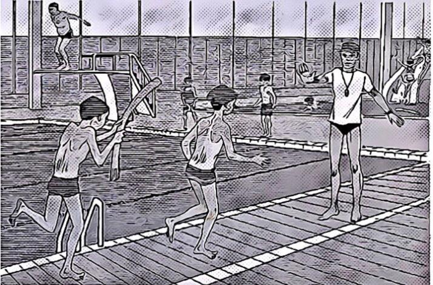

Série 4
Compréhension orale — image/audio, choix, et correction.
Q1
A1
3 pt
Correction: B — B
Question 1 : Écoutez les 4 propositions, choisissez celle qui correspond à l’image

A.
B. Bonne réponse
C.
D.
Q2
A1
3 pt
Correction: A — A
Question 2 : Écoutez les 4 propositions, choisissez celle qui correspond à l’image

A. Bonne réponse
B.
C.
D.
Q3
A1
3 pt
Correction: C — C
Question 3 : Écoutez l’extrait sonore et les 4 propositions Choisissez la bonne réponse
A.
B.
C. Bonne réponse
D.
Q4
A1
3 pt
Correction: C — C
Question 4 : Écoutez l’extrait sonore et les 4 propositions Choisissez la bonne réponse
A.
B.
C. Bonne réponse
D.
Q5
A2
9 pt
Correction: A — A
Question 5 : Écoutez l’extrait sonore et les 4 propositions Choisissez la bonne réponse
A. Bonne réponse
B.
C.
D.
Q6
A2
9 pt
Correction: A — A
Question 6 : Écoutez l’extrait sonore et les 4 propositions Choisissez la bonne réponse
A. Bonne réponse
B.
C.
D.
Q7
A2
9 pt
Correction: D — D
Question 7 : Écoutez l’extrait sonore et les 4 propositions Choisissez la bonne réponse
A.
B.
C.
D. Bonne réponse
Q8
A2
9 pt
Correction: B — B
Question 8 : Écoutez l’extrait sonore et les 4 propositions Choisissez la bonne réponse
A.
B. Bonne réponse
C.
D.
Q9
A2
9 pt
Correction: A — A
Question 9 : Écoutez l’extrait sonore et les 4 propositions Choisissez la bonne réponse
A. Bonne réponse
B.
C.
D.
Q10
A2
9 pt
Correction: D — Il sera en vacances.
Question 10 : Écoutez le document sonore et la question Choisissez la bonne réponse
A. Il aura la visite de sa famille.
B. Il fera une compétition.
C. Il pourra travailler au calme.
D. Il sera en vacances.Bonne réponse
Q11
B1
15 pt
Correction: C — Pour un renseignement.
Question 11 : Écoutez le document sonore et la question Choisissez la bonne réponse
A. Pour un achat.
B. Pour un envoi.
C. Pour un renseignement.Bonne réponse
D. Pour une réclamation.
Q12
B1
15 pt
Correction: B — Obtenir un logement.
Question 12 : Écoutez le document sonore et la question Choisissez la bonne réponse
A. Avoir une aide financière.
B. Obtenir un logement.Bonne réponse
C. Participer à un échange.
D. S’inscrire à un cours.
Q13
B1
15 pt
Correction: A — S’entretenir avec un enseignant.
Question 13 : Écoutez le document sonore et la question Choisissez la bonne réponse
A. S’entretenir avec un enseignant.Bonne réponse
B. Assister à un colloque.
C. S’inscrire à l’université.
D. Suivre un stage.
Q14
B1
15 pt
Correction: B — Leur collègue.
Question 14 : Écoutez le document sonore et la question Choisissez la bonne réponse
A. Leur client.
B. Leur collègue.Bonne réponse
C. Leur directeur.
D. Leur professeur.
Q15
B1
15 pt
Correction: C — Il a trouvé qu’il avait trop de visiteurs.
Question 15 : Écoutez le document sonore et la question Choisissez la bonne réponse
A. Il n’aime pas l’œuvre de ce peintre.
B. La présentation des tableaux lui a déplu.
C. Il a trouvé qu’il avait trop de visiteurs.Bonne réponse
D. Il s’est ennuyé en faisant la queue.
Q16
B1
15 pt
Correction: B — Passer le mois de juillet à Montpellier.
Question 16 : Écoutez le document sonore et la question Choisissez la bonne réponse
A. Aller chez Anne pendant ses congés.
B. Passer le mois de juillet à Montpellier.Bonne réponse
C. Prêter son appartement à son amie.
D. Visiter des logements en centre-ville.
Q17
B1
15 pt
Correction: A — Elle aurait aimé faire du tourisme.
Question 17 : Écoutez le document sonore et la question Choisissez la bonne réponse
A. Elle aurait aimé faire du tourisme.Bonne réponse
B. Elle aurait préféré se coucher tôt.
C. Elle espérait avoir plus d’interlocuteurs.
D. Elle s’attendait à un accueil plus favorable.
Q18
B1
15 pt
Correction: B — Parce que c’est inadapté à ses besoins.
Question 18 : Écoutez le document sonore et la question Choisissez la bonne réponse
A. Parce qu’elle trouve ça trop bruyant.
B. Parce que c’est inadapté à ses besoins.Bonne réponse
C. Parce que ça consomme trop d’eau.
D. Parce que ses enfants font la vaisselle.
Q19
B1
15 pt
Correction: B — Favoriser l’intégration des étrangers.
Question 19 : Écoutez le document sonore et la question Choisissez la bonne réponse
A. Encourager la mobilité des étudiants.
B. Favoriser l’intégration des étrangers.Bonne réponse
C. Mettre en relation des francophones.
D. Offrir des emplois aux mères de famille.
Q20
B2
21 pt
Correction: D — Il s’adresse aux acheteurs à Noël.
Question 20 : Écoutez le document sonore et la question Choisissez la bonne réponse
A. Il a associé le tourisme et le shopping.
B. Il est accessible la journée entière.
C. Il regroupe les personnes âgées.
D. Il s’adresse aux acheteurs à Noël.Bonne réponse
Q21
B2
21 pt
Correction: B — Les écologistes refusent la construction d’une autoroute.
Question 21 : Écoutez le document sonore et la question Choisissez la bonne réponse
A. Des habitants ont voté pour un maire écologique.
B. Les écologistes refusent la construction d’une autoroute.Bonne réponse
C. Le ministère des Transports veut faire construire une autoroute.
D. Un maire propose d’ouvrir une réserve naturelle.
Q22
B2
21 pt
Correction: B — L’absence de vérification des sources.
Question 22 : Écoutez le document sonore et la question Choisissez la bonne réponse
A. La formation professionnelle des jeunes.
B. L’absence de vérification des sources.Bonne réponse
C. Le recours systématique aux technologies.
D. Les mensonges de certains collègues.
Q23
B2
21 pt
Correction: C — Parce qu’elle souffre et qu’elle est fatiguée.
Question 23 : Écoutez le document sonore et la question Choisissez la bonne réponse
A. Parce qu’elle a toujours très faim.
B. Parce qu’elle surmenée et stressée.
C. Parce qu’elle souffre et qu’elle est fatiguée.Bonne réponse
D. Parce qu’elle veut perdre du poids.
Q24
B2
21 pt
Correction: C — D’une sélection de films.
Question 24 : Écoutez le document sonore et la question Choisissez la bonne réponse
A. D’une collection de haute couture.
B. D’une exposition de peinture.
C. D’une sélection de films.Bonne réponse
D. D’une tournée de chanteurs.
Q25
B2
21 pt
Correction: D — Il veut éviter toute publicité personnelle.
Question 25 : Écoutez le document sonore et la question Choisissez la bonne réponse
A. Il a répondu à une demande de ses patients.
B. Il consacre son temps à son nouveau métier.
C. Il s’est remis en question suite à un échec.
D. Il veut éviter toute publicité personnelle.Bonne réponse
Q26
B2
21 pt
Correction: A — Il avait du mal à accepter ses choix.
Question 26 : Écoutez le document sonore et la question Choisissez la bonne réponse
A. Il avait du mal à accepter ses choix.Bonne réponse
B. Il essayait souvent de rivaliser avec elle.
C. Il était attentif à ses centres d’intérêt.
D. Il lui interdisait les activités intellectuelles.
Q27
B2
21 pt
Correction: A — La création d’un livre pour enfant de qualité est un travail d’équipe.
Question 27 : Écoutez le document sonore et la question Choisissez la bonne réponse
A. La création d’un livre pour enfant de qualité est un travail d’équipe.Bonne réponse
B. Les enfants préfèrent les livres illustrés en trois dimensions.
C. Pour faire un bon livre, l’auteur doit réaliser lui-même les illustrations.
D. Un livre pour enfant doit comporter le moins de texte possible.
Q28
B2
21 pt
Correction: C — Des comportements alimentaires.
Question 28 : Écoutez le document sonore et la question Choisissez la bonne réponse
A. Des besoins énergétiques des jeunes.
B. Des bons réflexes pour les repas.
C. Des comportements alimentaires.Bonne réponse
D. Des conseils de préparation culinaire.
Q29
B2
21 pt
Correction: B — Aller se promener.
Question 29 : Écoutez le document sonore et la question Choisissez la bonne réponse
A. Jouer aux cartes.
B. Aller se promener.Bonne réponse
C. Regarder la télévision.
D. Visiter la région.
Q30
C1
26 pt
Correction: A — L’absence de formation sur l’élaboration d’un budget.
Question 30 : Écoutez le document sonore et la question Choisissez la bonne réponse
A. L’absence de formation sur l’élaboration d’un budget.Bonne réponse
B. Le désintérêt des jeunes pour les questions financières.
C. Le manque de cours d’économie à l’université.
D. Le peu d’informations des banques sur les crédits.
Q31
C1
26 pt
Correction: A — Elles ont été revendues.
Question 31 : Écoutez le document sonore et la question Choisissez la bonne réponse
A. Elles ont été revendues.Bonne réponse
B. Elles seront abandonnées.
C. Elles sont stockées à l’étranger.
D. Elles vont être falsifiées.
Q32
C1
26 pt
Correction: D — En observant divers types d’interlocuteurs.
Question 32 : Écoutez le document sonore et la question Choisissez la bonne réponse
A. En écoutant les gens dans la sphère privée.
B. En employant des technologies innovantes.
C. En interrogeant des personnes cultivées.
D. En observant divers types d’interlocuteurs.Bonne réponse
Q33
C1
26 pt
Correction: D — Le paradoxe : elle expose une absence d’œuvres.
Question 33 : Écoutez le document sonore et la question Choisissez la bonne réponse
A. L’humour : elle met en scène des produits ménagers.
B. La provocation : elle présente des tableaux scandaleux.
C. La répétition : elle montre des toiles absolument identiques.
D. Le paradoxe : elle expose une absence d’œuvres.Bonne réponse
Q34
C1
26 pt
Correction: D — Il met en doute l’interprétation des résultats.
Question 34 : Écoutez le document sonore et la question Choisissez la bonne réponse
A. Il adhère au choix de la méthodologie retenue.
B. Il approuve toutes les conclusions présentées.
C. Il conteste le professionnalisme des sondeurs.
D. Il met en doute l’interprétation des résultats.Bonne réponse
Q35
C1
26 pt
Correction: C — C’est un symbole fort de cette province.
Question 35 : Écoutez le document sonore et la question Choisissez la bonne réponse
A. C’est un exemple de réussite par le sport.
B. C’est un modèle rare de mixité culturelle.
C. C’est un symbole fort de cette province.Bonne réponse
D. C’est une référence pour son style de jeu.
Q36
C2
33 pt
Correction: A — De sa propre personnalité.
Question 36 : Écoutez le document sonore et la question Choisissez la bonne réponse
A. De sa propre personnalité.Bonne réponse
B. D’un ouvrage scientifique.
C. D’une action humanitaire.
D. D’une période de sa vie.
Q37
C2
33 pt
Correction: D — Qu’ils soient détournés de leur objectif.
Question 37 : Écoutez le document sonore et la question Choisissez la bonne réponse
A. Que les œuvres d’art y soient dégradées.
B. Que leur taux de fréquentation chute.
C. Qu’ils deviennent des espaces désuets.
D. Qu’ils soient détournés de leur objectif.Bonne réponse
Q38
C2
33 pt
Correction: D — Maintenir des tarifs compétitifs.
Question 38 : Écoutez le document sonore et la question Choisissez la bonne réponse
A. Améliorer la présentation des produits.
B. Augmenter le nombre de clients.
C. Multiplier les points de vente.
D. Maintenir des tarifs compétitifs.Bonne réponse
Q39
C2
33 pt
Correction: D — Elle soutient la popularité du français auprès des enfants.
Question 39 : Écoutez le document sonore et la question Choisissez la bonne réponse
A. Elle tend à devenir une forme d’expression spécifique.
B. Elle reste cantonnée aux frontières du continent africain.
C. Elle réunit plusieurs générations au sein d’un même lectorat.
D. Elle soutient la popularité du français auprès des enfants.Bonne réponse